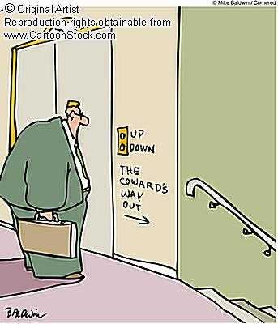
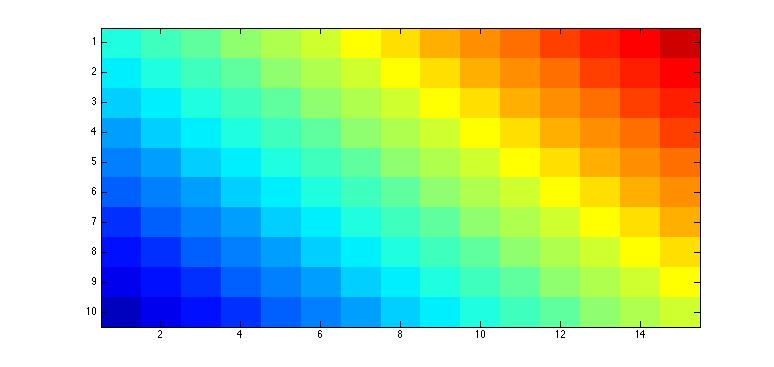
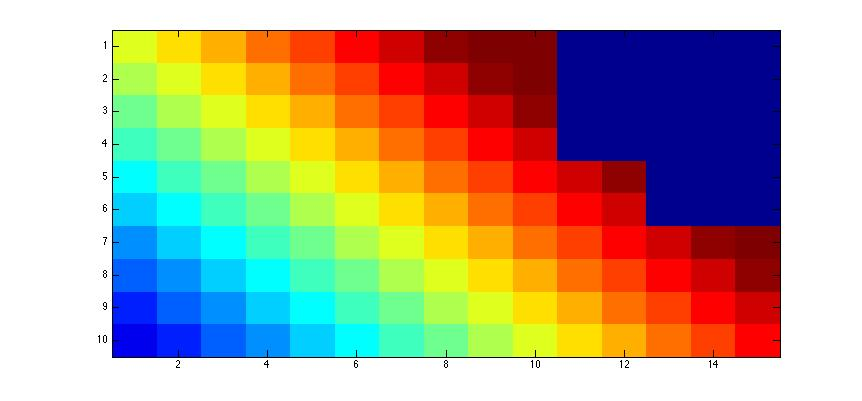
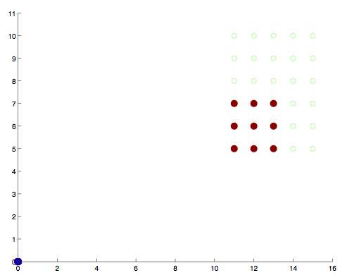
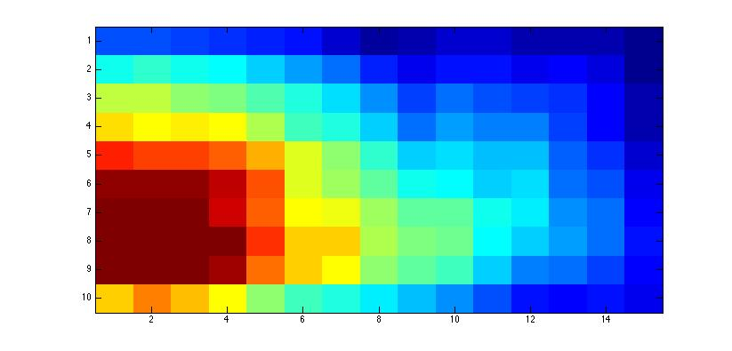
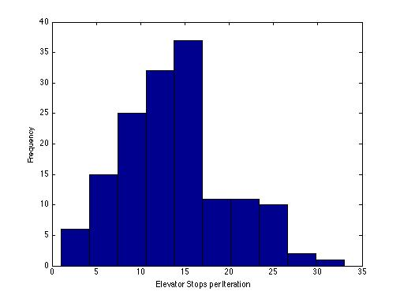
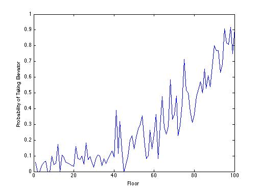

Going Down
Brad LeVeck and Julian RoMero
1. Introduction
We examine the decision of potential elevator riders to either board the elevator or take an outside option, the stairs. The people in our building don't like other people. Therefore, they do not like to be close to other people when they are in the elevator. In addition, once people are on the elevator, they do not give consideration to other passengers by stepping back. Rather, they stand their ground, and block other passengers from getting behind them. In the model, we examine where individuals stand once they board the elevator.
2. Model
Elevator
We focus on the downward process of the elevator. The elevator has a fixed rule. The process is started with a button press at a random floor. After the elevator has started moving, a period in our model is represented by the elevator moving down one floor. In each period a resident of the building may press the button with probability p. If the resident is below the elevator's current floor, that floor is added to the elevator's current queue of floors to visit. If the resident is above current position of the elevator, then that floor is added to the queue for the next run of the elevator. When the elevator reaches the bottom floor, all agents exit, and the process starts over with the elevator going to the highest floor in the new queue. If the new queue is empty, then the elevator stays at the first floor until a button is pressed. The elevator is represented by an m-by-n grid in our model.
Agents
The agent's goal is to get to the bottom floor of the building. To do this, the agent first presses the button to call the elevator, or if someone is already waiting at that floor, then the agent gets in line behind them. When the elevator arrives, the agent looks inside and makes a decision based on the current status of the elevator, either take the elevator or take the stairs. If the agent decides to take the elevator, their position is based on a distribution over the available floor space in the elevator. For example, when the elevator is empty, then the agent uses a distribution like this,

In this heat map hot colors (red) denote a higher probability of standing in that space. If there are people already on the elevator, the agents already on board will not move when a new agent tries to enter. Therefore they will block the new agent from standing behind the current agents. In our elevator, the door is on the bottom left. Therefore, when an agent picks his place in the elevator, he blocks all space above and to the right of him. When there is not enough space in the elevator, the agent is forced to take the stairs. For example, if there are some agents already in the elevator, the marginal distribution for the new agent could be,

In this heat map, the dark blue represents the area that has been blocked by the agents that are already on the elevator.
When making their decision, the agent will compare the utility of taking the elevator and taking the stairs. The utility for taking the elevator is,
U (Elevator) = 1 - c (E[s])-e(E[d])
where,
- c is disutility of stopping at floor
- E[s] is expected number of stops
- e is disutility from being close to others
- E[s] is expected distance from other passengers, according to marginal distribution over the remaining space.
The utility for taking the stairs is given by,
U (Stairs)=.5 - d*f
where,
- d is disutility from walking down one floor
- f is number of floors to reach the bottom
Size
The size of the agents is varied randomly in two dimensions (3-7 in our simulations). This size can be though of as differently sized humans, humans carrying large objects, or some undesirable characteristic of the rider.
Example
To clarify this process, we have the following video of the elevator boarding process. In this video, the groups of solid red dots denote passengers, and the hollow green dots denote space that is blocked off. In this example four people board the elevator before it becomes full.

3. Results
For these results our elevator traveled down 150 times. The first thing we can look at is the distribution of agent placement in the elevator. In this heat map, the hot colors (red) represent the frequency with which that square was occupied over the course of the simulation.

Even though agents have a propensity to stand in the top right corner, we see that the most common spot is the bottom left. The reason for this is that the effect of space being crowded out trumps the effect of the individual agent's propensity toward the top right. Next we look at the frequency of elevator stops on any trip.

We see that with our parameters, 15 was the most common number of stops on a trip down. We also see that there is a steep drop off after 15, but currently have no explanation for this. Next we look at the probability of taking the elevator at any given floor.

As we expected, the probability of riding the elevator is higher on higher floors. The reason for this is that on the higher floors, there is typically nobody blocking entry into the elevator. But as more people get on, it become more difficult and less desirable (due to expected distance from agents) to enter the elevator. Noise in the data are due to variations in agent size and placement. Next, we can examine the effect of agent size on probability of riding.
| Agent Area | Probability or Riding | Frequency |
| 2 | 0.4245 | 106.0000 |
| 3 | 0.3274 | 113 |
| 4 | 0.2740 | 208 |
| 5 | 0.3375 | 80 |
| 6 | 0.2938 | 211 |
| 8 | 0.2850 | 200 |
| 9 | 0.2626 | 99 |
| 10 | 0.2475 | 198 |
| 12 | 0.2368 | 228 |
| 15 | 0.1822 | 214 |
| 16 | 0.2054 | 112 |
| 20 | 0.1910 | 199 |
| 25 | 0.2404 | 104 |
We see that the probability of riding the elevator is mostly decreasing as the size of the agent increases. The reason for this is that larger will be forced to be closer to other agents making riding the elevator less desirable. An interesting extension would be to have agent disutility for walking down stairs proportional to agent size. Finally, we look at the empirical distribution function of the probability of riding the elevator.
 The way to read the ECDF is to find .5 on the y axis, which corresponds to about .25 on the x axis. This means that in 50% of the iterations, less that 25% of the potential passengers got to ride the elevator.
The way to read the ECDF is to find .5 on the y axis, which corresponds to about .25 on the x axis. This means that in 50% of the iterations, less that 25% of the potential passengers got to ride the elevator.
4. Code
- agentdown.m - Determines agent's choice, stairs or elevator.
- distance.m - Determines expected distance to closest agent.
- distribution.m - Determines initial distribution over elevator space.
- expectedvalue.m -Determines expected value of entering elevator.
- feasible.m - Gives matrix of feasible spaces for new agent.
- main.m - Runs the iterations of the elevator
- marginal.m - Determines marginal distribution of floor space when agents are already on the elevator.
- updatestate.m - Updates the state of the elevator after an agent enters.